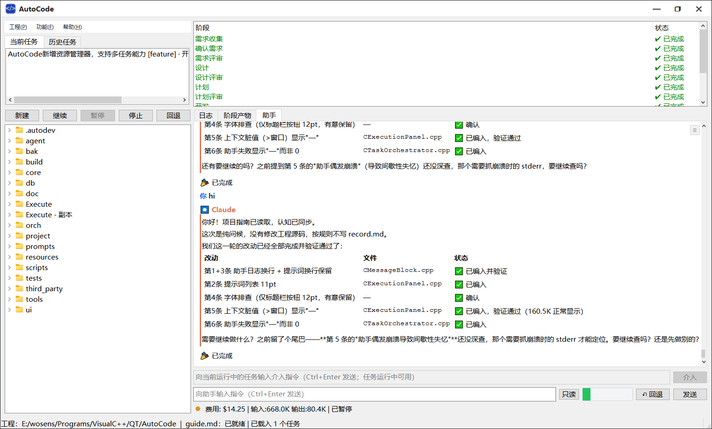
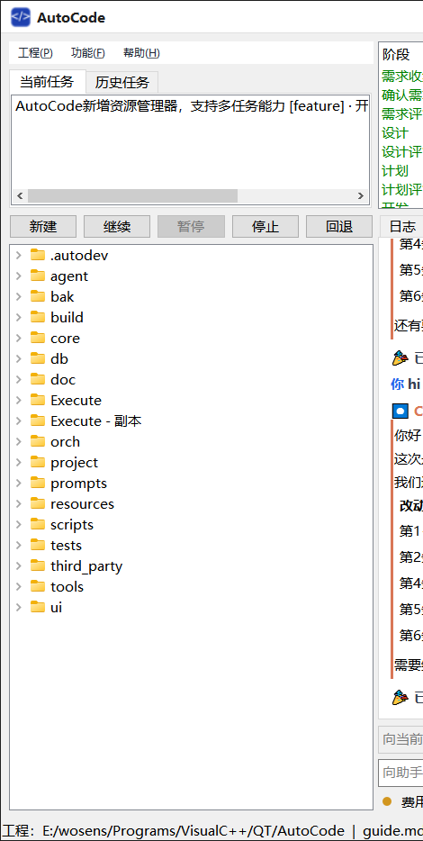
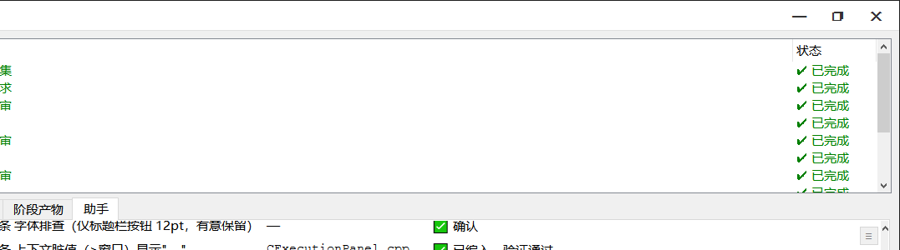

多 Agent 后端驱动的全自动软件开发编排器 —— 从需求到交付，一条流水线跑到底
C++ / Qt 6 · 绿色便携 · 版本号见标题栏（v主.次.编译号）先看最值得知道的六件事
四步跑通第一个任务
功能(F) → 环境安装...，授权后自动安装 Git、Node.js 与 Claude Code CLI。
工程(P) → 打开工程目录... 选择你的代码目录（在对话框中新建一个空目录即可从零开始）。
AutoCode 文件夹并作为工作目录，可正常创建任务、与助手对话（不算工程，不进「最近打开」列表，标题栏仍显示 AutoCode 版本）。新建 按钮：填任务名称、选类型（Feature / Bugfix）、写需求描述，勾选「立刻启动任务」点确定。
一屏读懂：左管任务，右看执行

| 区域 | 名称 | 作用 |
|---|---|---|
| 1 | 菜单栏 | 工程(P) 新建/打开工程、最近打开、同步 Guide；功能(F) 设置、环境安装；帮助(H) 本说明、关于。 |
| 2 | 任务列表（当前 / 历史 Tab） | 「当前任务」列本工程进行中的任务；「历史任务」列本工程已完成/失败的全部任务（存在工程自己的 .autodev/history.db，随工程走），支持右键「再次执行」。 |
| 3 | 任务控制按钮 | 新建 / 继续 / 暂停 / 停止 / 回退，按钮随所选任务状态自动启用禁用。 |
| 4 | 工程资源管理器 | 以工程目录为根节点浏览工程内全部文件（自动隐藏 build/.git/.vs/node_modules 等生成目录，隐藏清单可在设置页「资源管理器隐藏目录」调整；.autodev 与 Execute 可见）；单击文件即预览（文本类进内嵌预览页但不切页），双击文本类切到预览页，exe 等非文本文件以文件所在目录为工作目录调系统默认程序运行（与 Windows 资源管理器双击一致，游戏/便携程序可正常启动），支持 Windows 式拖拽（拖出到资源管理器/聊天窗口、树内移动/复制、拖入导入），右键支持剪切/复制/粘贴/新建文件夹（目标=选中目录/选中文件所在目录/工程根；建完即定位并进入行内命名，重名自动编号）/删除/改名/复制路径/「通过资源管理器打开」/「打开方式」/「添加到聊天框」/「属性」（2026.10.02）/「刷新」等。「属性」：调 Windows 资源管理器原生属性框（常规/安全/详细信息等同源多页签，文件与文件夹均支持）；系统接口不可用时自动弹内置属性窗（名称/类型/位置/大小（文件夹递归统计）/修改与创建时间，只读、隐藏勾选可写回）。「打开方式」子菜单与 Windows 资源管理器同源（系统 Shell 枚举，含 VS/VSCode/Qoder/Trae/记事本/写字板等用户级注册的全部程序，显示名同系统本地化名称；点击由系统启动——自动处理参数展开与 DDE 类动词，Visual Studio 等可正常打开文件）。批处理文件（.bat/.cmd）精简口径（2026.09.26）：首项固定「用 CMD 运行」（cmd /k 执行该批处理，完成后保留窗口显示输出），其后仅列推荐编辑器，不再堆全量程序列表（普通扩展名不受影响，兜底列表封顶 12 项）。可执行文件（.exe/.msi/.com/.scr/.pif）同口径收敛（2026.10.09）：仅列推荐程序，无推荐时子菜单禁用（与资源管理器对可执行文件的语义一致，不再倒出全机自荐程序）。右键菜单全部菜单项均带图标（固定项为内置矢量图标，「打开方式」各项显示对应程序的真实图标）。任务列表右键（查看任务内容/重命名/自动命名/再次执行/移除等）、阶段条右键、上下文进度条菜单、助手 Tab 右键「彻底删除」、回退窗口文件列表「查看变更」等其余右键菜单同样带图标。 |
| 5 | 阶段图标条 | 当前任务的阶段横向图标条（2026.09.04 起，替代旧的纵向阶段表）：每阶段一个圆形状态图标 + 短名，连接线指示推进进度——✔绿=已完成、▶蓝=进行中、✖红=失败、⏸黄=未完成、○灰=待执行；鼠标悬停显示阶段全名与状态，右键某阶段可「再次执行」（仅重跑该阶段）。整条固定一行高，纵向空间全部留给日志区。 |
| 6 | 日志 / 阶段产物 / 助手 Tab / 文件预览 | 日志=任务执行对话流；阶段产物=各阶段生成的 .md 文档；助手=可开多个的独立问答助手（动态 Tab）；双击资源管理器文件生成预览页。 |
| 7 | 费用 / Token 统计 | 当前任务累计费用（美元）与输入/输出 token 数。仅任务侧（2026.09.05 起任务与助手统计完全隔离），紧跟在状态图标之后（图标转圈=任务运行中、空闲色点=任务状态）；各助手自己的费用/token/请求/耗时统计在各自助手页内统计栏，同样自带状态图标（转圈=该助手运行中）。 |
| 8 | 状态栏 | 当前工程路径、guide.md 状态、已载入任务数。 |
| 操作 | 效果 |
|---|---|
| 点击左上角应用图标 / 右键点标题栏空白处 | 弹出系统菜单（还原 / 移动 / 大小 / 最小化 / 最大化 / 关闭），与标准窗口一致。 |
| 双击标题栏空白处 | 最大化 / 还原切换，效果同最大化按钮。 |
| 点击任务栏图标 | 前台时最小化，最小化时恢复窗口（最大化状态保持）。 |
| 标题栏右侧的灰色小字 | 三段式版本号 v主.次.编译号（如 v1.0.25），编译号每次构建自动 +1。 |
| 标题文本（工程名-AutoCode 版本） | 2026.09.07 起：打开工程后窗口标题为「工程名-AutoCode 版本」（如 拳皇-AutoCode v2.1.122，未开工程为 AutoCode 版本）——任务管理器 / Alt-Tab 悬停与展开列表可直接辨认多实例各开的工程；标题栏左上角标题同步带工程名。切换工程时自动刷新。 |
AutoCode 的核心：两条流水线 + 三道评审关卡
[Policy] ReviewAskOnEscalate=0 关闭弹窗（退回旧静默升级）。| 状态 | 含义 | 可执行操作 |
|---|---|---|
| 🟡 Pending | 已创建未启动 | 继续（启动） |
| 🔵 Running | 执行中 | 暂停、停止、介入指令 |
| ⏸ Paused | 暂停（含迭代超限自动升级） | 继续（从下一阶段恢复） |
| ⏹ Stopped | 被手动终止 | 继续（续跑）、回退 |
| ✅ Done | 全部阶段完成（转入历史） | 右键「再次执行」 |
| ❌ Failed | 执行失败（转入历史） | 右键「再次执行」重试 |
任务进入代码审查阶段时，AutoCode 会先对开发阶段落盘的变更清单（changed_files.md）逐文件做一轮静态预审（CodeReview 工程的 ReviewSdk 引擎 + 当前后端大模型），再带预审结论启动 Agent 评审——Agent 需逐条核实预审发现：属实的纳入问题列表并影响通过/驳回决策，误报的说明排除理由。预审结论同时落盘到任务目录 sdk_review.md 供事后查阅（Markdown 报告，含级别/文件/行号/规则/问题/建议）。相关约束：
| 项 | 说明 |
|---|---|
| 开关 [Review] SdkOnStage | 缺省 1（开启）；置 0 回到纯 Agent 评审（右键手动审查不受影响）。 |
| 单轮文件上限 [Review] SdkMaxFiles | 缺省 12（合法 1..50）：大改动任务截断送审，防预审耗时失控；日志会提示截断。 |
| 单文件超时 [Review] SdkTimeoutSec | 缺省 600 秒（合法 60..3600）。 |
| 复用判定 | 同任务同迭代且变更清单未变时不重复预审；驳回打回重改后（迭代号/清单变化）自动重审新代码。预审进行中停止任务会立即终断并落 Stopped，不等预审跑完。 |
| 引擎缺失 | 程序目录无 ReviewSdk.dll 时预审自动跳过（日志一次性提示原因），不影响任务正常推进——预审是增强输入而非门禁。 |

| 操作 | 说明 |
|---|---|
| 打开工程目录... | 打开已有代码目录，也可在对话框中选/建一个空目录从零新建工程（自动初始化 .autodev 并生成 guide.md）；首次打开自动扫描生成 guide.md（耗时数分钟）。 |
| 最近打开 | 鼠标悬停即弹出按钮面板（位置与原级联子菜单一致；移到其他菜单项自动隐藏，点击工程按钮才收起）：所有最近工程以小按钮流式排布——每行个数按按钮宽度自适应（宽度上限=面板宽一半），行占满整宽、标题完整显示；约 9 行可视（40~50 个工程），滚轮滚动查看其余；首位「更多...」打开全量历史对话框（顶部搜索框实时过滤、多选右键删除、窗口位置大小记忆）。按钮底色随打开次数渐变：1~5 次基色不变，之后渐红，100 次纯红 (255,0,0)，再渐暗到 255 次暗红 (100,0,0)——一眼看出使用/修改频率（每次成功打开工程累加 1；次数见悬停提示）。悬停按钮：底色变蓝、文字加粗，底部状态栏显示该工程完整路径。启动时不自动加载工程，停留在空工程态由用户手动选择。 |
| 同步 Guide | 按 record.md 中的改动流水增量更新 guide.md（任务完成后也会自动触发，此处为手动入口）。 |
| 任务右键菜单 | 当前任务：查看任务内容 / 移除；历史任务：查看任务内容 / 再次执行。 |
| 回退按钮 | 打开统一回退界面：左侧记录点列表（任务阶段 / 助手轮次双粒度，增量备份），右侧文件变动明细，选中记录点后点「回退到此记录点」把工程源码回退到该时点（双击不执行回退，防误触）。回退前会先把当前现场自动快照留底，随时可再撤销回来。 |
剪切 / 复制 / 粘贴与 Windows 联动：右键剪切/复制会把文件（支持多选）写入系统剪贴板——直接到 Windows 资源管理器里按 Ctrl+V 即可粘贴（剪切=移动、复制=复制）；反过来在资源管理器里复制/剪切的文件，在本树右键「粘贴」即可粘入当前选中目录（源可以在工程外）。同名目标自动 “ (n)” 编号，跨盘移动自动退化为复制+删源，目录不会移进自己的子目录。剪切粘贴完成后剪贴板自动清空（与资源管理器一致的一次性语义）。
左栏底部的文件树：工程目录本身就是根节点（打开后自动展开），显示工程内全部文件；生成目录（build、.git、.vs、node_modules）自动整目录隐藏，保持树面干净；.autodev（任务产物/记录）与 Execute（部署产物/配置/提示词）可见可浏览。显示隐藏与备份排除互不相干：备份范围由设置页「备份排除目录」（[Backup] ExcludeDirs，默认含 build/Execute/.autodev/node_modules 等——依赖目录文件量巨大且可再生，不备份可把大工程首轮快照从几十分钟降到秒级）单独控制，与树中是否可见无关。隐藏清单可配置（2026.09.23 新增）：设置页「目录排除」组新增「资源管理器隐藏目录」（[Explorer] HiddenDirs，逗号分隔）——预填当前生效清单，想看 build 就把 build 从清单里删掉保存（立即生效，已加载的树同步重显）；清空 = 全部可见。
多根节点与关联项目（2026.09.21 新增）：文件树下方有三个按钮——「添加根节点」弹出目录选择对话框（缺省打开当前工程目录），选中一个关联项目目录后它会作为新的根节点与工程根并排显示（例如主工程 + 它引用的库工程）；「根节点上移 / 下移」调整选中根节点在树顶层的显示顺序。根列表（含顺序）自动持久化到工程的 .autodev/explorer.json，随工程走，重开工程后自动还原；不同工程的关联根集合互不干扰。右键额外根节点可「移除该根节点」（仅移出树，不动磁盘目录；工程根本身不可移除）；与现有根存在嵌套包含关系的目录不能重复添加（嵌套目录本就在父根树内可见）。
展开态自愈（2026.09.22 新增）：Agent 任务运行期间频繁写盘，目录可能被外部增删/重建/重命名——展开的文件夹会随行重建而收起。资源管理器现在会记住本次会话内展开过的目录路径，任何结构变化（包括被删后重建）后行一重新出现就自动恢复展开；用户主动收起的目录不会被强行重新展开。切换工程时记忆自动作废，不跨工程携带。
| 操作 | 说明 |
|---|---|
| 双击文件 / 目录 | 用系统默认程序打开（目录则用资源管理器打开）。 |
| 拖拽（2026.08.27 新增） | 与 Windows 资源管理器一致：拖出——把文件/目录（支持多选）拖到系统资源管理器即复制/移动，拖到聊天软件发送框即作为附件；树内拖动——拖到另一目录默认移动（按住 Ctrl=复制）；拖入——从系统资源管理器拖文件到树上即复制进目标目录。目标同名自动加 “(2)” 序号，目录不可拖入自身子树。 |
| 通过资源管理器打开 | 目录直接打开该目录；文件则打开所在目录并定位选中该文件。 |
| 剪切 / 复制 / 粘贴 | 与 Windows 资源管理器联动（写入/读取系统剪贴板，支持多选）：在本树剪切/复制后可直接到系统资源管理器 Ctrl+V（剪切=移动、复制=复制）；在资源管理器复制/剪切的文件在本树「粘贴」即粘入选中目录（源可在工程外）。同名自动 “ (n)” 编号（不再弹窗拦截），跨盘移动退化为复制+删源。 |
| 删除 / 改名 | 删除有二次确认；改名弹输入框，目标已存在会拦截。 |
| 复制路径 / 复制相对路径 | 绝对路径 / 相对路径写入剪贴板（Windows 原生分隔符）。根节点「复制相对路径」直接复制名称；普通文件复制相对其所在根的路径（在关联根内则相对关联根）。 |
| 添加到聊天框 | 把选中文件的路径插入「助手」提问框，向 Claude 提问时直接引用该文件。 |
| 代码审查（2026-09-30 新增；2026-10-08 Tab 化改造） | 对选中的文件或文件夹发起静态代码审查（CodeReview 工程的 ReviewSdk.dll 引擎，需部署在程序目录）。每次右键新建独立审查窗口（2026-10-08 改）：多窗并存互不影响——已开窗口的审查继续跑、不会被新窗口挤掉，标题栏带目标名便于区分；审查进行中关窗会弹确认（缺省/Esc=「继续审查」误触保护，确认「关闭并中止」才中止——已完成文件的结果保留、基线已前移；主窗口退出确认同样计入在跑的审查窗口）。窗口分两个 Tab：①选择文件：顶部过滤下拉（全部 + C/C++｜Python｜C#｜Delphi｜Visual Basic｜Rust｜Go｜Java，点「编辑过滤…」可改各过滤项的扩展名条件或新增过滤项，存 config.ini [Review] Filters）；文件清单每行带复选框（缺省全勾），状态列标注 修改/新增/无变化，支持多选，右键菜单：选择/取消选择（作用于选中行，无选中则全部）/「开始审查」（自动切到审查页）。②审查：发现表格（级别高/中/低配色、文件、行号、规则、问题、建议），行首带复选框（缺省全勾，右键可全选/取消全选），双击行直接打开文件并定位到该行（主窗口自动前置展示预览页；文件已被删除时状态栏明确提示）；选择文件页双击文件行也可预览该文件；问题/建议列 tooltip 自动按宽度换行（长文本多行展示）；两个列表的表头全部支持手工拖动调宽（尾列自动吃剩余宽度）；可停止/开始审查/导出 Markdown 报告。全量审查开关（窗口顶部，缺省不勾）：不勾选时文件清单只列自上次审查后修改/新增的文件，且审查逐文件只送修改部分（增量：基线=上次审查成功时的内容快照，存 exe 同级 review_cache/<目标哈希>.bl；与基线零差异的文件零模型调用直接跳过；无基线的新增文件自动全量）；勾选时列出全部文件并完整审查。并发审查 Agent 数（2026-10-08 新增，全量审查开关右侧）：每个待审文件起一个一次性只读 Agent（模型实例）同时审不同文件，缺省 10 个（1..32 可调，即改即存 config.ini [Review] Agents；1=逐文件串行；审查进行中锁定不可改，下一轮生效）。按建议修复（2026-10-02）：有勾选发现时可用——按模板「请根据审查意见修复代码（存在就修复，不存在忽略）：问题清单」生成修复提示词（只含勾选行）并注入当前助手的提问框。结果缓存复用（2026-10-02）：代码未修改时再次进入直接展示上次结果不重跑模型（自动停在审查页）。审查中动态图标（2026-10-02）：状态行首转圈指示器。选文件夹时递归收集（跳过 .git/.vs/node_modules/build 等生成目录，封顶 200 个）；大模型走当前后端（五后端均可），单文件超时 10 分钟。缺 ReviewSdk.dll 时菜单项会明确提示原因。 |
| 刷新（2026.09.23 新增） | 手动同步树与磁盘：树更新依赖系统文件变更通知，外部程序批量写盘或杀毒软件实时扫描时通知偶发丢失，新文件/目录可能不及时出现。右键「刷新」对选中目录（选中文件则其所在目录；未选中则全部根与已展开目录）强制重新读取，立即补齐/剔除。树显示明显落后于磁盘时用。 |
所有任务产物都落在工程自己的 .autodev/ 目录里，随工程走、可提交进版本库：

| 页签 | 内容 |
|---|---|
| 日志（未选中任务时该页隐藏） | 任务执行的完整对话流：Claude 的分析文本、每次工具调用（Read/Edit/Bash...）及结果，底部可发「介入指令」中途纠偏（仅任务运行中可用；未选中任务时介入栏与任务费用栏整体隐藏）。折叠显示：工具调用卡片默认折叠、点击展开（Edit 红绿 diff），连续多次工具调用自动合并为一张卡（标题显示首条摘要 + ×N，展开逐条查看；2026.10.15 起工具调用之间的 Agent 文本不再打断合并——DSH 等每次工具前都输出思维链的后端，工具调用也收敛为一张组卡而不是逐卡铺开）；连续的系统/提示信息行合并为一个灰色折叠组（标题显示首行摘要与行数），错误行独立标红不折叠。 反向分页（2026.09.03 新增）：历史较长的会话切档/重开时初始只挂载最近 200 条消息（大幅降低切档耗时与内存），更早的消息滚动到顶部时自动加载（每次追加 100 条，视口位置锥定不动，不跳动）；提示词下拉跳转到更早提问时也会自动补齐加载。 流畅加载（2026.09.04）：历史块分小帧渐进构建（每帧限定耗时预算，不卡界面）；消息的 Markdown 排版在后台线程预渲染（界面线程只做轻量落地），切任务/切助手/滚动加载大量历史时界面保持响应。 |
| 阶段产物 | 按阶段列出 .autodev/tasks/<id>/ 下生成的 .md 文档（需求书、设计书、计划书、审查报告...），右侧直接渲染阅读；支持多选 + 右键「另存为」（2026.10.15）：单选可改文件名（缺省中文文件名，如 plan.md → 计划.md），多选（Ctrl/Shift）只能选保存目录、文件名自动用阶段中文名，同名冲突自动加序号。 |
| 助手 1 / 助手 2 / … | 动态多助手 Tab，每个 Tab 一条独立问答会话（互不串流）：「＋」页新增助手；Tab 上 × 关闭（会话保留可恢复）；右上角 ▾ 弹出已关闭助手列表选名恢复；拖动排序、双击改名，右键重命名 / 自动重命名（把该助手收到的全部提示词交大模型总结，生成不超过 10 字的新名称与一句说明——说明显示在 Tab 悬停提示首行；助手运行中发起时自动挂起，当前指令完成后才执行，日志会先留一条「本轮完成后进行」提示，不打断正在跑的指令；首条提示词先改名后执行（2026.10.08）：从未改过名（仍叫「助手 N」）的助手第一次发送提示词时，先按该条提示词自动改名、改完再执行指令——期间追加的提示词一并暂存，改名后合并一次投送；此间点「停止」则暂存退回输入框、不再执行）/ 彻底删除（二次确认后对话/会话链/统计永久移除，不可恢复；与 × 软关闭不同）。运行中的助手独立累计日志，切走再看也不丢。Tab 标题标记：标题左侧彩色闪点＝运行中。Tab 栏自动多行（2026.09.22）：助手多/窗口窄时 Tab 标签自动换行叠放（不再出左右滚动箭头），宽度足够时仍为单行。 多助手并发（2026.09.03 新增）：每个助手是一个完全独立的 Agent（各自的 CLI 进程、会话链、上下文与消耗统计）。助手 A 运行中切到/新建助手 B 后发送，指令立即在 B 开始执行（B 起自己的进程），不排队、不等 A 结束；多个助手可同时亮 ● 并行干活，各自的输出落到各自的日志流。在同一助手运行中发送仍是「追加指令」——Claude Code 与 PiAgent（2026.09.22 RPC 形态）立即注入当前轮（模型正在干活时即收到转向/补充），DSH 空闲即发/运行中排队，Codex/Hermes 本轮结束后自动续发。 输入栏/统计栏随页走（2026.09.05 新增）：每个助手 Tab 页内自带独立实例的指令输入框、权限下拉（自动/手工/只读）、上下文/撤销/发送按钮和费用统计栏（费用前有状态图标——该助手运行中转圈、空闲灰点；含本轮 ↑↓ 实时与耗时跳动）——切助手即整套切换，各助手的输入草稿与消耗统计互不干扰；输入框随内容自动长高（按软换行实际行数计，封顶 10 行后出滚动条，清空回单行；资源管理器右键「添加到聊天框」注入长文本后同样自动长高）；助手消耗不再并入任务统计（面板底部统计栏仅任务侧）。 |
| 文件预览 | 资源管理器单击文件生成预览页，双击切到该页（多文件并存）。文件内查找（2026.09.22 新增）：页面顶部工具栏「查找」按钮或 Ctrl+F 展开查找栏——输入内容后「↓ 下一个」（缺省方向，回车）/「↑ 上一个」（Shift+回车）逐个定位并选中命中串，自动滚动到命中位置；可勾选「区分大小写」（缺省不区分）、「循环」（缺省不循环，到底即停并提示「未找到」）；Esc 或 ✕ 收起查找栏。纯文本/Markdown/HTML 在渲染视图内查找，二进制在十六进制视图的 ASCII 列内查找。 |
| 介入指令（日志页下方） | 助手输入（各助手页内，独立实例） | |
|---|---|---|
| 对象 | 正在运行的任务 | 独立助手会话（每个助手自己的输入框，草稿互不干扰） |
| 时机 | 仅任务 Running 时可用 | 打开工程后随时可用；该助手运行中仍可打字，发送变「➤ 追加指令」（向该助手当前轮追加，立即注入/本轮结束后自动发出）或「⏹ 停止」（只停该助手，不影响其他并发助手）；该助手空闲则显示「发送」，点击立即执行——即使其他助手正在跑（2026.09.03 起多助手并发，互不排队） |
| 典型用途 | 「测试不用跑 XX」「换个方案实现」 | 「这个函数干嘛的」「帮我加个注释」 |
| 附属功能 | — | 权限下拉（自动审批 / 手工审批 / 只读，随助手记忆，缺省自动审批）：自动审批＝工具全开不询问；手工审批＝助手改动工程/执行有影响操作前须先征得你同意——所有后端都会弹窗（Claude Code 走 ask_user；DSH/Pi/Codex/Hermes 助手运行 --ask 弹窗命令，窗口由 AutoCode 主程序弹出，用户作答回传助手；多助手同时提问时自动排队逐个弹）；只读＝仅查询分析禁改工程（Claude/Pi 后端工具硬禁，DSH/Codex/Hermes 由提示词约束，且不拍快照/不沉淀经验）。另有 ↶ 撤销（对话层撤销最后一条提问，连带其回复一并移除；与源码回退正交）、上下文条（绿≤70%/红>70%，点击或右键弹出「立即压缩上下文 / 设置上下文大小」——作用于该助手自己的会话，上下文过大时手动压缩可显著提速降费）；页底统计栏＝[状态图标][费用/输入/输出/请求/耗时][本轮 ↑↓]——状态图标转圈表示该助手运行中，只反映该助手自己的状态 |
左栏 「回退」按钮打开统一回退界面（需先打开工程、任务非运行中）。工程源码在关键时点自动增量备份为「记录点」：
| 记录点类型 | 说明 |
|---|---|
| 任务阶段边界 | 任务每进入新阶段前留底，可整体回到「设计完成时」「开发前」等任意边界。 |
| 助手轮次 | 助手每轮改码前留底，可精确回到某一问一答之前。 |
| 回退前快照 | 每次执行回退前自动再留一份当前现场——回退本身也可撤销，放心操作。 |
界面左侧选记录点，右侧即列出该时点的文件变动明细（新增/修改/删除）；选中后点「回退到此记录点」确认执行（双击记录点不执行回退，防误触）。右侧文件列表支持右键 →「查看变更」（或直接双击文件行）：弹出双栏并排对比窗口（类 Beyond Compare），左侧为上一记录点内容、右侧为当前记录点内容，变化区域自动标红/标绿、公共前后缀对齐、滚动条联动，可直观查看该文件具体改了什么；新增文件左侧显示「不存在」、删除文件右侧显示「不存在」，二进制文件不做文本对比。回退过程中断（断电/崩溃）会在下次打开工程时自动检测并还原到回退前状态，不会留下半截现场。备份为 CAS 增量存储（相同内容只存一份、只备份代码/构建配置/文档文本等代码相关文件，*.obj/*.exe/*.png 等中间产物不入库），占用小、速度快；回退不触碰非代码文件（原地保留）。
全自动不等于放任不管。AutoCode 提供四种介入通道 —— 「阶段边界」和「熔断升级后」永远最可靠；运行中途的实时插话能否真正送达取决于所选后端（见下）。
| 通道 | 说明 | 可靠程度 |
|---|---|---|
| ① 介入输入栏 （日志页下方） |
任务运行中输入指令（Ctrl+Enter 发送），指令记入对话流。仅当前正在运行的任务可用，其他状态输入栏自动禁用（不会静默丢弃）。 运行中送达能力（按后端）：Claude Code（stream-json 注入）与 PiAgent（2026.09.22 起 RPC 形态 steer 注入）中途插话真正送达当前轮——模型在正在执行的阶段内即收到新指令（转向/补充），日志显示「已注入用户指令（当前轮立即生效）」；DSH 半支持（空闲即发，运行中排队）；Codex / Hermes 为一次性进程，运行中插话自动排队到下一阶段开头注入（日志显示「已排队」）。排队指令同任务有效，换任务/停止即作废。 |
✅ Claude/Pi 立即生效 ⏳ 其余排队下一轮 |
| ② 阶段边界介入 | 子进程无法真正中途挂起，所以「暂停」= 当前阶段跑完、进入下一阶段前停下（不会产生半截产物）—— 这正是你的介入窗口。 推荐套路：暂停 → 手动修改产物或代码（如直接编辑 requirements.md / design.md）→ 「继续」从下一阶段恢复，或阶段表右键「再次执行」只重跑该阶段（跑完停住，不推进后续）。 |
✅ 最可靠 |
| ③ 熔断升级 （系统主动请你） |
两种触发：同一阶段被驳回超过 3 次仍不通过，或上游输入多次生成失败 → 任务自动暂停并提示「已暂停并升级到用户处理」。 处置：打开 .autodev/tasks/<任务id>/escalation.md（含驳回焦点、最近阶段历史与处置建议），三选一：直接改代码后重跑 / 调整任务描述再继续 / 放宽验收要求。 |
✅ 可靠 |
| ④ 助手反向提问 （ask_user） |
「助手」页问答时，Claude 若缺关键信息会主动弹窗向你提问——是它来找你，不影响任务流水线。选项列表末尾有「其他（自行输入）」，不在列表里的问题可自由输入。 | ✅ 按需回答 |
| 场景 | 能否介入 | 方式 |
|---|---|---|
| 阶段运行中实时插话 | ✅ Claude Code / PiAgent（立即送达当前轮） ⏳ DSH 空闲即发/运行中排队 ⏳ Codex / Hermes 排队下一轮 | 介入输入栏（日志区分「已注入/已排队」） |
| 阶段边界 | ✅ 能 | 暂停 → 手改产物/代码 → 继续或右键重跑该阶段 |
| 熔断升级后 | ✅ 能（就是请你来） | 看 escalation.md → 三选一处置后恢复 |
| 任务非 Running 状态 | ❌ 不能 | 介入栏已禁用（指令不丢失、不静默忽略） |
| 非当前任务 | ❌ 不能 | 执行层单任务串行，注入只认当前任务 |
| 人工审批闸门（如设计须确认后才继续） | ❌ 尚未实现 | 已列入后续规划 |
Agent 启动的 GUI 程序窗口会被自动隐藏收纳进沙箱：不抢焦点、鼠标点击穿透、不上任务栏/Alt-Tab——你完全无感，键鼠不受任何干扰。Agent 则用内置工具对沙箱窗口离屏截图、消息级点击/输入来做界面验证；开启「录制测试过程」后全程 MP4 录像（带时间戳与点击红点，事后可回放每一步测试过程）。
为什么内置？此前沙箱是一个需要 Agent 主动加载的技能，模型经常不走沙箱直接物理操控鼠标（干扰你工作）。现在沙箱是主程序常驻能力：Claude Code 后端下以 sandbox_* MCP 工具常驻可见（无需任何技能），其余后端（DSH/PiAgent/Codex/Hermes）用 --sandbox 命令行，提示词里已自动注入用法铁律。
| 能力 | 说明 |
|---|---|
| 自动收纳 | Agent 进程树（runner → cmd → 测试程序）新出现的顶层窗口自动幽灵化；控制台窗口、系统宿主进程（explorer 等）不收纳 |
| Agent 工具 | windows（列窗口）/ capture（截图返 PNG 路径，Agent 读图验证）/ click / drag / type / keys / command / button / tree（UIA 控件树带可点坐标）/ restore / close |
| 录像 | 每窗口一个 MP4（exe\sandbox\rec\，窗口尺寸变化自动分段）；截图存 exe\sandbox\shot\；保留天数可配（默认 7 天，启动自动清理） |
| 管理入口 | 菜单 功能(F) → 测试沙箱...：窗口列表、截图、还原所选/全部还原、关闭窗口、打开录像目录 |
| 安全兑底 | 退出 AutoCode 时全部还原；上次崩溃残留的隐形窗口下次启动自动还原；还原操作随时可用（沙箱对话框 / Agent 调 restore） |
设置：设置 → 常用 → 「测试沙箱」组——启用总开关（默认开）、自动收纳新窗口（默认开）、录制测试过程（默认关，勾选后 5fps 录制）、录像保留天数（[Sandbox] 节）。若希望测试窗口正常显示（例如要亲眼盯着），取消勾选「自动收纳」或总开关即可；也可随时在沙箱对话框里「还原」单个小窗口。
任务类型 / 流程档位 / 执行阶段全部可自定义 — 菜单 功能(F) → 任务编排设计...：左侧三个列表（任务类型、流程档位、执行阶段）各配添加/编辑/删除按钮与右键同功能，均支持多选批量删除；执行阶段表末列为「缺省选择」（默认勾选状态），右键或「设置为缺省」按钮可切换。右侧主区点击阶段节点即显示/编辑该阶段要求（prompts 目录下的提示词模板），编辑器上方工具栏提供保存/查找/替换（查找/替换栏可展开，Esc 关闭）。
数据与生效：编排配置存 exe 同级 prompts/orchestration.json（随目录整体拷贝便携）；首次打开缺文件自动生成内置编排（14 个内置阶段 / feature、bugfix 两类型 / 简单、标准、严格三档位）。结构变更（增删改/缺省切换）即时落盘并生效：新建任务对话框的类型/档位/阶段清单立即用最新编排——自定义阶段（内部编号 ≥100）经运行期动态注册即刻可用，新阶段提示词模板存 prompts 目录；内置阶段不可删除（引擎字段只读展示）。含自定义阶段或重排序的任务会显式保存自己的阶段流，按配置序执行。
设置 — 菜单 功能(F) → 设置...：多页 Tab 集中编辑全部可调参数——「常用」页（运行策略、Agent 后端、评审与助手、目录排除、测试沙箱），「模型」页（2026-10-08 起独立第二页，统一维护全部后端共享的自定义模型条目与「当前」模型；列表高度随窗口高度自适应），「Claude Code」页（claude 命令、思考预算 MAX_THINKING_TOKENS（0=默认不注入）与 后端跟随「模型」页共享表开关——开启后 Claude 后端的任务与助手也走本表当前条目，仅 Anthropic 兼容端点条目生效）。「评审与助手」组含提示词长度闸门（2026-10-08：发送前本地估算 token，超「提示词占比上限」（默认 5%）或「提示词 token 上限」即不直接发送，自动起一次性提炼 Agent 压缩后以提炼稿提交——提炼稿/原文在对话流事件行留痕，提炼失败兑底原文；日志渲染引擎（2026-10-17：任务/助手日志两档渲染——「旧版（卡片流）」逐消息控件（默认）；「新版（自绘）」Model/View 虚拟化只绘可视区、正文按视口惰性材化，长会话载档/滚动/跳转显著提速且交互等价（折叠展开、双击助手消息拖选复制、链接单击打开）；切换保存后对新建立的会话页生效（重开助手 Tab / 重启程序全部生效），两档随时互切、会话数据零迁移，[View] Engine）；「DeepSeekHarness参数设置」「PIAgent 参数设置」「CodexHarness 参数设置」「Hermes 参数设置」各后端专属页（安装状态、node 路径、根目录、思考强度（2026-10-08 起可设：DSH reasoningEffort off/low/high/max、Pi thinking、Codex minimal~xhigh、Hermes false~ultra，空=后端默认）等参数；2026-10-08 起模型条目维护已全部收敛到「模型」页）。保存到 exe 同级 config.ini，确定后立即生效——软件保持绿色便携，配置随程序走；多实例共享该文件并自动热同步。
任务级配置覆盖（2026.09.09 新增）：选中任务时打开设置，顶部会出现黄色提示条「◆ 任务模式：本次设置保存到任务目录（任务：×××）…」——此时读到的参数为任务档优先（.autodev/tasks/<id>/config.ini，缺键自动继承全局值），确定后参数写入该任务目录（全局 config.ini 不动）；未选任务时读写全局。点击任务时运行期参数（后端/模型表/路径自愈/单价/评审并行/目录排除等）自动切到该任务的配置，取消选中/删除任务/切工程后回全局。想让某任务用不同后端或模型，选中它再改设置即可，互不影响。
模型配置超集同步（2026.09.09）：自定义大模型条目无论何时保存都会同时并入全局（缺省）配置——同身份（请求地址+API 格式+模型名）的条目以最新内容更新、新条目追加、从不删除，全局永远是所有任务模型配置的超集；全局表原为空时自动采用任务表的激活条目（缺省自身始终可用）。任务档还没有自己的模型表时，设置页实时显示全局表（跟随超集增长）；任务一旦保存过自己的模型表即冻结为该任务自己的视图。后端、单价等其余参数仍是任务私有（不回写全局）。
Agent 后端（五选一） — 「常用」页下拉切换。助手粘性后端（2026.09.20 起）：每个助手在首次发送时绑定当时的后端，之后切换全局后端不影响任何已有助手（运行中的也不变，继续用各自原后端跑完），仅新建助手/新任务使用新后端——助手运行中随时可切换，状态栏会提示。任务或 guide 运行中切换暂保留原值（提示后空闲再切）：任务多阶段复用同一会话链，中途换后端会跨后端语义错乱。
| 后端 | 说明 |
|---|---|
| Claude Code | 默认后端，走 Claude 官方 CLI。 |
| DeepSeekHarness (DSH) | DeepSeek 官方 Agent 框架，JSON-RPC 接入，支持自定义网关模型条目与费用折算。 |
| PIAgent | Earendil pi-coding-agent；支持自定义网关模型（Anthropic Messages 等 API 格式）、计费单价折算；对话流整段返回不碎裂。 |
| CodexHarness | OpenAI Codex CLI（锁 0.87.0，chat wire + 本地代理自动注入 max_tokens/include_usage），支持自定义网关模型条目，费用/输入/输出/请求实时统计。 |
| Hermes | NousResearch hermes-agent（Node Harness / Python venv 双形态自动适配），NDJSON 流式事件（工具卡/思考流/进度），支持自定义网关模型条目与费用统计；模型配置经部署根 config.yaml 幂等注入。 |
环境安装 — 菜单 功能(F) → 环境安装...：以管理员权限自动安装 Claude Code 运行所需环境 —— Git、Node.js、Claude Code CLI；结束前会询问是否一并安装 DeepSeekHarness。装一次即可，之后可重复运行修复环境。
四个可选后端（DSH / PIAgent / CodexHarness / Hermes）均不装不影响 Claude Code 后端使用；未安装时设置页对应参数整体置灰、「Agent 后端」下拉中的该项禁用，安装+检测通过后自动解锁。各后端安装入口：
| 后端 | 安装途径 | 说明 |
|---|---|---|
| DeepSeekHarness | 环境安装脚本 | install_env.bat 结束前选 Y（或脚本 /dsh 单独模式）：git clone + pnpm 构建，需联网数分钟。 |
| 设置页「安装 DeepSeekHarness…」 | 提权运行脚本 /dsh 模式。装到程序目录 DeepSeekHarness\，随目录拷走即携带；启动自动探测回填，也可「重新检测」。 |
|
| PIAgent | 设置页「安装 PIAgent…」（本机源） | 提权运行脚本 /pi 模式：从本机 PIAgent 源码仓库 robocopy 复制到 Execute\PIAgent\，离线可用（需本机有已构建源码，默认 exe 上级 PIAgent\，环境变量 PI_SRC 可改）。 |
| 设置页「联网安装（npm）」 | 提权运行脚本 /pi-npm 模式：窗口内自动刷新 PATH（继承环境过旧无需重启软件）→ 缺 Node.js 时自动先装 → npm install -g @earendil-works/pi-coding-agent（npm 镜像加速）；装完检测自动从 npm 全局目录解析，根目录都不用填。本机无 PIAgent 源码时「安装 PIAgent…」也可改走此联网安装（脚本会提示）。 |
|
| CodexHarness | 设置页「安装 CodexHarness…」 | 提权 npm 安装 codex-cli 0.87.0（本地工程布局），需联网。 |
| 设置页「本机源安装（离线）」 | 浏览选本机已有 Codex 安装源 → robocopy 整树复制到 exe 同级 Execute\CodexHarness\，无需管理员/网络——npm 联网卡死时的可靠替代。 |
|
| Hermes | 设置页 Hermes 页「本机源安装（离线）」/「联网安装（git）」 | 联网（git）：点击按钮后弹输入框现场填仓库地址（Hermes Harness 的 git 仓库 URL 或本机仓库路径，不落配置文件）→ 提权运行 install_env.bat /hermes <仓库地址>：git 浅克隆 + pnpm 依赖 + 构建 dist\cli.js 到 exe 同级 HermesHarness\（Hermes 无 npm 包，缺省获取源为 https://github.com/nousresearch/hermes-agent，输入框已预填，可改填其他 git URL 或本机仓库路径；已装时重跑 = 自动改 git fetch+reset 更新，保留本地文件）。本机源（离线）：浏览选本机已有 Hermes Harness 源目录（其下有 dist\cli.js）→ robocopy 整树复制，无需管理员/网络。完成后均自动/手动重新检测。 |
后端版本管理 — 菜单 功能(F) → 后端版本管理... 或设置页「Agent」组「后端版本管理…」按钮：五 Agent 后端（Claude Code / DeepSeekHarness / PIAgent / CodexHarness / Hermes）的当前版本 / 最新版本 / 结论 / 更新入口一站式表格。
| 操作 | 说明 |
|---|---|
| 当前版本 | 打开即自动读取：DSH / Pi / Codex / Hermes 直读本机安装文件；Claude 子进程探测（约 1–2 秒）。「刷新版本」随时重读。 |
| 查询最新版(联网) | 手动触发（不自动联网）：npm registry 查三包 + git ls-remote 查 DSH 远端 tag，约 5–15 秒；显示的是查询时刻的远端值，仅本次会话有效，不落盘。Hermes 改用发布版本号比对（与其余 Harness 一致，2026.09.21）：上游有 v2026.M.D 日历发布 tag，git ls-remote --tags 取最大发布 tag 作为最新版本号（不再显示 HEAD 提交号）；本地版本列优先取 git describe 最近可达发布 tag（非 git 部署回退包版本号，此时明示无法比对）；相等=已是最新（v2026.M.D）；远端有更新发布=有新版本（附本地上次同步时刻）。注：上游 main 分支为高频提交，开发提交不参与判定，仅发布 tag 出新版才算更新。 |
| 更新 | 按行分派：见下表。均弹可见管理员命令窗口执行，完成后窗口保持打开（cmd /k）供核对输出。 |
| 后端 | 更新方式 |
|---|---|
| Claude Code | npm install -g @anthropic-ai/claude-code@latest（装/更一体，未安装也可直接装）。 |
| DeepSeekHarness | 先查远端最新 tag → install_env.bat /update-dsh <tag> <dsh根>：git fetch+reset 切版本 + pnpm 重建，保留本地（node_modules、组合文件不受影响）；版本上限锁：AutoCode 集成绑定的最高版本为 dsh-v0.1.0-rc.7——上游 dsh-v0.1.2 起移除了 AutoCode 组合依赖的全部示例包，高于该版本的更新会被阻断（结论列显示「不受支持」）；若本机已处于不兼容版本，用 /update-dsh dsh-v0.1.0-rc.7 回退；自动修复：任务/助手启动时检测到版本不兼容会自动执行「回滚基线→清残留→依赖重建」（约 5~15 分钟，日志逐步显示 🔧 进度，完成后自动继续原阶段；每进程限一次，失败转手动指引）；另 ~/.dsh/.credentials.yaml 为旧 version/refs 包装格式时启动前自动迁移为平铺（备份 .autosave）。更新目标优先用设置页配置的根目录（多实例共享外部 DshRoot 也生效），未配置时回落程序目录 DeepSeekHarness\；未安装时按钮置灰（先走安装）。失败重跑即修复（幂等）。 |
| PIAgent | 按安装形态自动分派（点击时自动判定）：源码形态 → install_env.bat /update-pi <当前配置的 Pi 根> 全自动更新——git pull --ff-only（保留本地提交）→ pnpm install + build（dist 不入库必须重建）→ 同步 exe 侧部署副本（如与源仓不同目录）；npm 全局形态 → npm install -g @earendil-works/pi-coding-agent 直接更新 npm 全局包。未安装时按钮置灰（先走安装）。 |
| CodexHarness | 始终重装锁定版 npm install @openai/codex@0.87.0 --save-exact（工程根内，提权窗口执行）。v0.88+ 已移除 wire_api="chat"，不提供升级，结论列恒显锁定说明。 |
| Hermes | 已装态点「更新」→ install_env.bat /hermes-update <当前配置的 Hermes 根>：git fetch+reset（保留 node_modules/venv 等本地文件）+ 依形态重建（Node：pnpm install+build；Python：补丁重敷 + hermes --version 验证）；未安装时按钮变「在线安装」（git 克隆 + 构建，仓库地址点击时输入）。 |
detected dubious ownership（仓库属主不一致），在任意终端执行一次：
git config --global --add safe.directory <DSH根目录> 后重跑更新即可。2026.09.10 起各后端共享同一份模型列表与「当前」模型；2026-10-08 起统一在设置 → 「模型」页维护（四后端参数页不再有模型列表；Claude Code 可经页内开关跟随本表，仅 Anthropic 兼容端点条目生效，每轮以环境变量注入接入点/密钥/模型）：新增/编辑/删除/设为当前，切换后端无需重新配置模型；双击单元格就地编辑（2026.10.15）——显示名/接入点/API 类型（下拉）/模型名称/上下文/最大输出六列双击即改（F2 亦可），显示名留空自动回退模型名称、模型名称不可为空、数字列非法输入自动还原；「当前」标记列与完整表单（含密钥）走「编辑…」按钮。合并规则 = 四张表（[DshModels]/[PiModels]/[CodexModels]/[HermesModels]）以条目最多的表为基底、其余表的新条目（按请求地址+API格式+模型名同身份去重）追加；共享「当前」取基底表的激活条目。字段 = 显示名、请求地址（网关 URL）、API 格式（anthropic-messages 原生 / chat / responses）、模型名称、API Key、上下文窗口、最大输出。条目「上下文窗口」为该模型的权威窗口（2026-10-15 起）：助手上下文进度条分母、自动压缩阈值与提示词闸门均按它计算（同名多条目时按实际使用的条目取值——回报模型带槽位前缀的按槽位条目、裸模型名按当前条目）；仅当模型不在表内才回退内置名字探测（GLM=128K / Claude=200K / 未知 200K）。条目编辑不要求把该后端选为当前 Agent 后端（也不要求已安装）——可提前预配，切到该后端时激活条目即生效：AutoCode 在每次阶段启动前幂等自愈写入 ~/.pi/agent/models.json、~/.codex/（config.toml + auth.json）或部署根 config.yaml（Hermes），多实例并发也不会互相覆盖坏。保存时同一份内容写回四张节，启动/选中任务时自动合并归一后统一应用（任务级覆盖、全局超集等既有机制不变）。列表高度随窗口高度自适应（拉高设置窗口即看到更多条目，2026-10-08 起）；列表列宽可用鼠标拖动表头分隔线调整（每列含请求地址均可调，双击分隔线自适应内容），调整结果自动记忆在 config.ini [Layout]，下次打开设置页保持；末列「当前」自动拉伸填满剩余宽度。2026-10-05 快捷切换 ／ 2026-10-07 起仅本助手生效：各助手输入栏右侧的上下文占用条本体直接显示当前模型名（本助手覆盖优先，其次实际回报，未跑过一轮显示共享表当前条目；Claude Code 后端模型自报）；右键菜单「选择模型（仅本助手）」子菜单列出共享表全部条目（勾选＝该助手生效模型；Claude 后端同样可选，标注「需 Anthropic 兼容端点」），点选即为该助手设置对话级模型覆盖——下一轮对话立刻用新模型，不改缺省（全局）模型配置，其他助手与后续新助手仍用全局当前模型；已设覆盖时菜单首项「跟随全局设置…」一键恢复（Claude 后端恢复后按「跟随本表」开关决定走本表或自身配置）。覆盖随助手档案（assistant.json）持久化。全局切换仍走设置 → 模型页「设为当前」。
失败消息会自动附带真因（stderr 尾部 / 会话错误记录）。常见两类：① 「No conversation found with session ID」——正在恢复的会话 id 在本机不存在：工程/助手档自其他电脑拷贝时必现（会话数据存在 ~/.claude，不随工程目录走），2026.08.27 起已自动降级为新建会话重发本轮（日志可见「↻ 会话在本机不存在…」），无需处理；若旧版仍失败，新建一个助手即可。② 认证/网络类（stderr 含 api key/401/login 等）——在该电脑命令行运行一次 claude 交互式完成登录；走网关中转需配置 ANTHROPIC_BASE_URL / ANTHROPIC_AUTH_TOKEN，或换用 DSH/PIAgent/CodexHarness 后端+自定义模型条目。
AutoCode 的所有任务都依附于工程。先通过 工程(P) → 打开工程目录... 打开一个代码目录（新建空目录亦可从零建工程），再创建任务。
两种可能：① 你点了「暂停」——阶段边界正常停下，点「继续」从下一阶段恢复；② 同一阶段迭代超过 3 次仍不通过——系统主动暂停并升级，请查看日志页末尾的评审意见，修改需求描述或处理后点「继续」。
首次打开会调用 Claude 完整扫描代码库生成 guide.md，大工程需几分钟，属正常现象。仅首次较慢，之后增量更新。若生成失败，菜单「同步 Guide」可重试。
任务运行中，可在日志页下方的介入指令框输入要求（如「不要动 ui 目录」「补上单元测试」），Ctrl+Enter 发送，指令会记入对话流供后续阶段参考；但正在运行的阶段无法被打断（已知限制）。要立即纠偏，推荐：点「暂停」（当前阶段跑完即停）→ 手动修改产物/代码 → 「继续」或右键单阶段「再次执行」。详见「人工介入」一节。
三个工具：① 历史任务右键「再次执行」整体重跑；② 阶段表右键「再次执行」只重跑某一阶段；③ 左栏「回退」按钮把工程源码回退到任意记录点（改码前的现场也会自动快照留底）。
切换口径（2026.09.10 起）：选中任务（启动/再次执行/点选任务列表）右侧自动显示该任务的任务日志；「再次执行」同时切回「当前任务」页；任务跑完/失败自动切到「历史任务」页选中该任务，日志保持最终输出；取消选中/移除/删除任务（无选中任务）则右侧切到当前助手日志。
助手运行中切换任务不会停跑助手（2026.09.23 改进）：任何助手正在运行时点击其他任务（或取消选中、启动任务），任务日志/配置立即切换，正在运行的助手不受影响继续干活（运行痕迹继续写入原任务档）；等全部助手结束后，助手面板自动切换到目标任务档。此前口径：点任务会硬停在跑助手。
历史任务存在工程的 .autodev/history.db 中，每个任务另有权威档案 .autodev/tasks/<id>/task.json。即使历史库意外损坏（如异常断电），程序打开工程时会自动体检：坏库收档为 history.db.corrupt-日期时间并自动从 task.json 重建，历史记录随即恢复，无需手工处理（收档文件确认无用后可删）。
点助手区的「＋」可开多个助手，每个助手是独立 Agent（独立进程/会话链/上下文），可多个同时运行互不干扰——A 在跑时切到 B 发指令立即执行，不等 A（2026.09.03 起不再排队）。各自独立会话与日志，互不串流。Tab 可拖动排序、双击改名（右键菜单另有「重命名 / 自动重命名」——自动重命名按该助手全部历史提示词请大模型总结出名称与说明，说明悬停 Tab 可见；2026.10.08 起未改过名的助手首次发送提示词时，先按该提示词自动改名、改完再执行指令）；点 × 关闭的助手会话仍保留，右上角 ▾ 可随时恢复；全部助手页都关掉前至少保留一个。会话随任务档自动保存，重开工程后原样恢复。2026.09.05 起各助手页内自带独立的输入栏与统计栏（切换 Tab 整套切换，草稿与消耗互不干扰；助手消耗只记在助手自己名下，不并入任务统计）。
右栏底部实时显示当前任务费用与 token 消耗（任务侧专用；各助手自己的消耗在各自助手页内统计栏，2026.09.05 起与任务统计完全隔离）；任务详情（右键「查看任务内容」）可看单任务累计费用。历史记录存在每个工程自己的 .autodev/history.db 里（随工程目录走、可多实例共用，含 5 秒并发写保护 + WAL）。
当前版本执行层为单任务串行（保证工程文件不被并发写坏）；新任务可先建好排队，当前任务结束后依次执行。
三段式 v主.次.编译号（如 v1.0.25）：主版本 = 架构级大改版，次版本 = 功能迭代，编译号 = 每次构建自动 +1，用于精确对应某个 exe。
同一目录的多个实例（如多次启动 Execute\AutoCode.exe）：共享 exe 同级 config.ini，后端/模型/扫描排除等设置保存后其他实例约 1 秒内自动热同步（状态栏提示「配置已从其他 AutoCode 实例同步」）；2026.09.07 起「最近打开」列表也跨实例实时同步（他实例打开/移除工程，本实例菜单即时刷新）。不同目录的实例（如 Execute 与 Execute - 副本）：两份独立 config.ini，互不同步——需保持后端/模型一致时请手工对齐（注意 ~/.pi/agent/models.json 等为两份配置共同写入的全局文件，配置不一致时后写者生效）。
同一工程不要在两个实例里同时操作：助手对话（assistant.json）、任务状态（task.json）、guide/record 等都是整文件写入，双开同工程会「后写覆盖先写」互相冲掉（仅历史库 history.db 并发安全）。2026.09.07 起有工程在席锁（.autodev/instance.lock，记录持锁实例 PID）：手动打开已被其他实例使用的工程会弹确认警告；程序崩溃残留的锁会按 PID 存活自动失效，不阻断后续打开。启动时不会自动打开任何工程（2026.09.09 起移除自动恢复），多实例可各自从「最近打开」选择不同工程。
三个都是与 Claude Code 并列的可选 Agent 后端（DSH = DeepSeek 官方框架；PIAgent = pi-coding-agent；CodexHarness = OpenAI Codex CLI 0.87.0）。不装完全不影响——默认走 Claude Code 后端。想用哪个：设置 → 对应参数页 → 安装按钮（详见「可选后端的安装」）→「重新检测」→「Agent 后端」切换（助手运行中可切；任务/guide 运行中暂保留原值）。三个后端都支持自定义网关模型条目（设置页「自定义大模型」组）。
多见于网关配置异常或「最大输出」超限。检查：① 设置页 PIAgent 模型条目的「最大输出」不得超过 131072（网关上限，超限必 500）；② 网关地址（如 192.168.118.128:9000）本机可达；③ 点「重新检测」确认安装有效。AutoCode 已在每次阶段启动前自动重写 ~/.pi/agent/models.json 自愈此类问题，偶发时重跑该阶段即可。
模型服务的分钟级限流（TPM/RPM），非配置错误。AutoCode 已自动把 PIAgent 的自动重试退避拉长为 15/30/60 秒（写入 ~/.pi/agent/settings.json 的 retry 段，可跨过配额滚动窗口），日志中会显示「↻ 模型接口瞬态错误…自动重试」进度；多次重试后仍失败时会明确报错并提示处理办法：稍等 1~2 分钟重发、减小上下文（新开助手）或换配额更高的模型。若频繁触发，说明当前模型/账号的每分钟配额小于单步上下文用量，应换模型。
旧版打开非文本文件时未指定工作目录，exe 继承了 AutoCode 的当前目录而不是自己的文件夹——用相对路径读资源/配置的程序（游戏、便携软件常见）启动即退出，看起来就是「点了没反应」。现版已对齐 Windows 资源管理器双击口径：exe 以自身所在目录为工作目录启动，可直接正常运行；打开失败时会弹窗显示具体错误码。
能。CodexHarness 经本地代理实时捕获每轮 usage（输入/输出 token 与请求数），任务运行中费用/输入/输出/请求四列即时刷新；DSH、PIAgent 与 Hermes 同样支持（Pi 需在设置页配置计费单价四项后折算金额）。
任务或助手运行中关闭主窗口会弹出确认框，逐项列出正在进行的工作（任务名与阶段、运行中的助手、改码前备份），默认选择「取消」防止误关。选择「退出」会中断这些工作——中断的任务可稍后从任务列表「再次执行」继续，助手对话已实时落盘不受影响。
设置 → 评审与助手 → 「启用专家助手」开启后，改码类提示词自动执行深度链：规划 Agent 先制定实施计划与验收标准 → 执行轮照计划实施 → 独立验证 Agent 实际编译/测试核验 → 未过自动回炉修复，全程用 token 换质量。查询类请求不走深度链（2026.10.02 起）：问句/合查询动词（是什么、为什么、帮我看看、分析…）且不含改码动词的提示词直接回答（日志提示「ℹ 查询类请求，跳过专家模式深度链」）——规划与验证是改码质量保障，对查询纯属干扰。深度链过程输出已压缩上屏：规划/验证轮的长文本只保首段，结论以事件判定行为准（✔ 独立验证通过 / ⚠ 验证未通过回炉），不再刷屏淹没执行结果。
助手运行中再发送的指令不会立刻打进日志，而是暂存在日志区右下角的小折叠框里（默认只显示第一条，点左侧小箭头展开全部）。未发送的排队指令可以编辑或删除：展开后每条右侧有 ✕ 按钮，或右键该条选「编辑…/删除」（折叠状态下右键首条也能操作）——删除的指令不会再发送，编辑后的文本以修改后内容投送。指令实际开始处理时才正式进入日志（轮中注入的后端立即生效；排队类后端在本轮结束后自动续发——若积了多条会自动合并成一轮一次性投送，不会一条一轮地串行跑）。若提示「请稍候」（助手处于崩溃宽限/重试窗口），指令会自动退回输入框。用户提示词上方有一条 3px 分隔线，便于区分每一轮提问。
这不是错误，是护栏机制：助手单条提示词一次执行最多跑 40 轮（每轮＝模型思考＋工具调用，读文件/改代码/构建都算），达到上限时 AutoCode 会自动续跑（最多 2 次）接着干，已完成的工作全部落盘不丢；若三次共 120 轮仍未干完，会保留断点并提示发送「继续」接着做。频繁触顶说明单条提示词任务太大（如多文件重构＋自测＋构建），两个办法：① 拆任务——把大需求拆成多条小提示词分步发送（推荐，每步都可验证）；② 调上限——设置 → 运行策略 → 「助手轮次上限」（10～200，[Adhoc] MaxTurns，默认 40），保存后下一条提示词即生效。此外 AutoCode 会在发送前自动做工作量评估（2026.09.23 新增，纯本地启发式、零 token）：按提示词里的编号子任务数、点名的源文件数、重活关键词（重构/自测/构建…）与文本长度综合估算，重任务自动上调本轮轮次预算（日志提示「⚙ 工作量评估：轮次上限 40 → N」），小任务不受影响、只升不降；勾选框「按提示词工作量自动上调」可关闭（[Adhoc] MaxTurnsAuto，默认开）。
这是任务/助手日志区的渲染方式灰度开关（设置 → 常用 → 评审与助手）：「旧版（卡片流）」每条消息一个控件块，长期默认、短会话最稳妥；「新版（自绘）」（2026-10-17）改用 Model/View 虚拟化——只绘制可视区、滚动全程零消息子控件、正文排版按视口带惰性材化，长会话（数千条消息）载档、滚动与跳转明显更流畅，交互完全等价（折叠/展开、双击助手消息拖选复制、链接单击打开、错误工具卡标红——实时回填的单条卡自动展开）。两档随时互切、会话记录零迁移零丢失：会话正本始终存于任务/助手目录的 chat.json / assistant.json，渲染引擎只决定显示方式，切回旧版一切照旧。切换保存后对新建立的会话页生效（状态栏有提示），重开助手 Tab 或重启程序后全部生效。